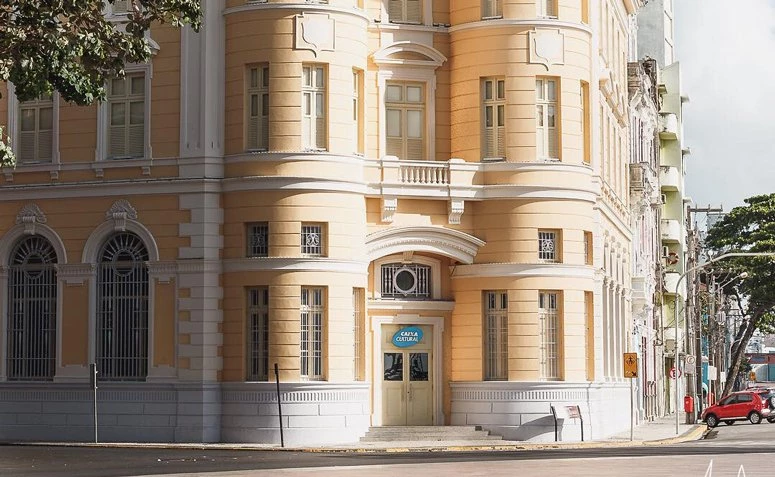

Os Dois pontos turísticos mais interessantes do Recife Antigo
Armazéns do Porto

O Armazéns do Porto é o lugar ideal para aquela pausa para o almoço ou apenas para tomar um cafezinho ou uma cerveja para espantar
o calor.
O espaço fica bem ao lado do letreiro de Recife, na Praça do Marco Zero, e oferece uma variedade de bares, restaurantes,
cafés e sorveterias.
O mais legal de tudo é a vista privilegiada que se tem para o porto e para as esculturas de Brennand.
Caixa Cultural
De frente para o Marco Zero está a Caixa Cultural, em um charmoso edifício de 1912 que funcionou como sede da Bolsa de Valores
de Pernambuco até 2006.
O espaço multicultural traz exposições, apresentações de teatro, música, dança e diversas outras atividades.
Você pode conferir a programação no site ou entrar para conhecer as belas instalações e ser surpreendido.